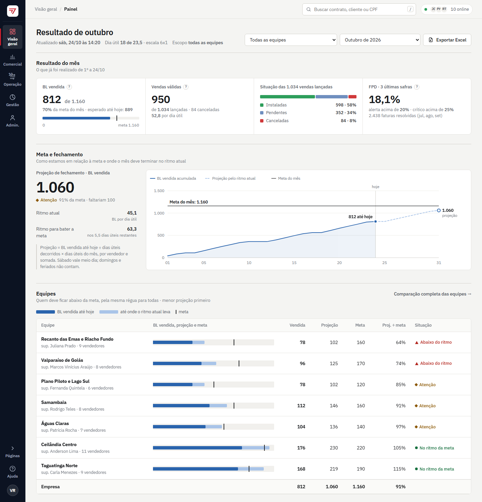
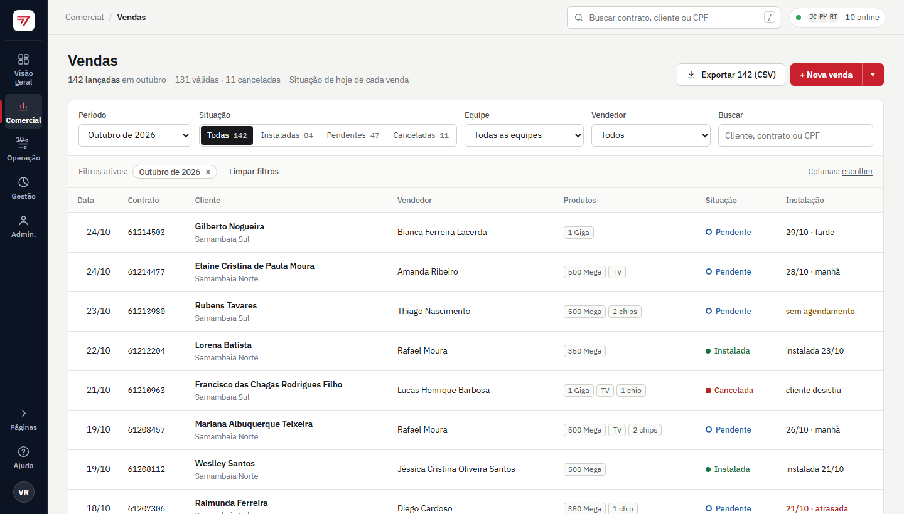
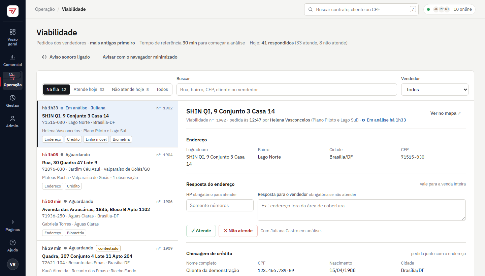
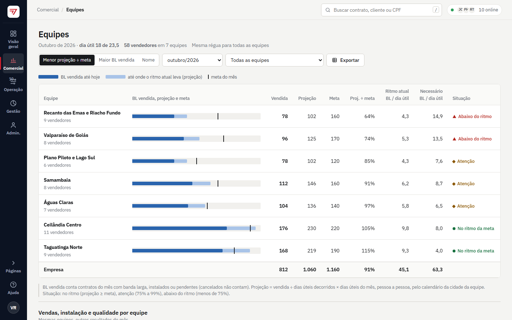
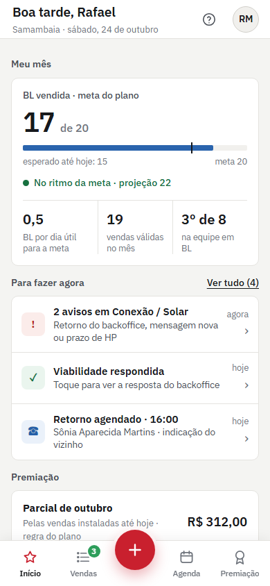
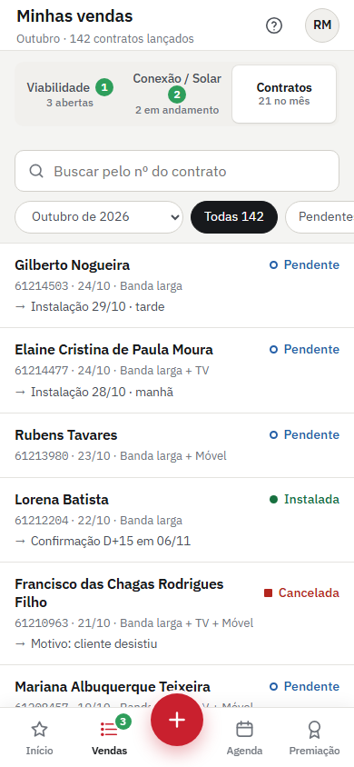

Atualizei hoje (25/10) a base de dados. As vendas e os demais dados estão 100% atualizados até hoje. Os painéis, as metas, a premiação e os indicadores já mostram os números completos.
Por que fiz
Antes de mudar qualquer tela, fiz um diagnóstico do sistema como ele estava: 20 telas, 126 funções no servidor e 70 consultas de indicadores. O sistema funcionava, mas tinha crescido rápido, e isso aparecia em quatro pontos.
Difícil de achar as coisas
O menu misturava telas de consulta com ações como "Nova venda" e "Lançar FPD". Havia três botões diferentes para abrir e fechar o menu, e alguns avisos levavam para a tela errada.
O painel não respondia às perguntas do gestor
Os gráficos estavam na ordem em que foram criados, e a mesma informação aparecia em três ou quatro formatos. Faltava a resposta direta: vamos bater a meta? Quem está abaixo? O que precisa de atenção hoje?
Números com regras diferentes
"Atenção" do ritmo valia 75% numa tela e 85% em outra. "Sem venda hoje" tinha três definições. O limite de FPD era diferente entre os painéis e a premiação. Um mesmo número podia aparecer com valores diferentes.
App e visual remendados
O app do vendedor era o site ampliado. Havia quatro estilos de etiqueta de situação, buscas que funcionavam de jeitos diferentes e quatro camadas de estilo sobrepostas.
Como fiz
- 1DiagnósticoLi o sistema inteiro e mapeei como uma venda percorre a operação: viabilidade, lançamento, rota, confirmações, FPD e premiação.
- 2Duas direções visuaisMontei dois protótipos navegáveis, "Controle" e "Fluxo", e escolhi a direção A, "Controle": lateral azul-marinho, sem tema escuro e com uma tela de entrada nova.
- 3Implementação em camadasPrimeiro mudei a estrutura e o visual de todas as telas; depois refiz as telas principais exatamente como no protótipo aprovado e, por fim, levei as demais telas ao mesmo padrão.
- 4Conferência tela a telaComparei cada tela lado a lado com o protótipo, no computador e no celular, e conferi cada perfil (gerente, backoffice, supervisor e vendedor).
- 5Publicação seguraCada publicação que faço passa por testes automáticos e por uma auditoria de segurança antes de ir ao ar. Se algo falha, a publicação é barrada.
O que mudou para cada pessoa
Gerente e gestão
- Painel novo, organizado pelas perguntas do gestor: resultado do mês, meta e projeção de fechamento, todas as equipes na mesma régua (com o supervisor de cada uma) e as filas da operação.
- Desvios que pedem atenção: equipes abaixo do ritmo, FPD alto por equipe, instalações atrasadas e vendedores sem vender há dias. Cada item mostra a base do cálculo e leva aos registros.
- Regras únicas: ritmo em "Atenção" abaixo de 75% da meta e FPD com alerta acima de 20% e crítico acima de 25%, iguais em todas as telas.
- Equipes: comparação lado a lado e vendedores agrupados por equipe.
Backoffice
- Filas mais claras: a viabilidade mostra há quanto tempo cada pedido espera, a equipe do vendedor e quando um "não atende" foi contestado.
- Ficha da venda nova: o andamento em etapas (lançamento, confirmações, instalação e primeira fatura), o histórico e o próximo passo à vista.
- Números ao lado de cada página: quantas vendas no mês, pendências abertas, rota de hoje e confirmações do dia.
Vendedor (app no celular)
- Início com o que importa: a meta do mês, o ritmo, a posição na equipe, o que fazer agora e a parcial da premiação.
- Minhas vendas: o nome do cliente e a data da instalação em cada venda. Decidi liberar só o nome e só das próprias vendas: o vendedor continua sem ver CPF, telefone ou endereço.
- Botão "+" no meio da barra: pedir viabilidade, enviar venda Conexão ou Solar e marcar retorno na agenda.
Para todos
- Navegação em cinco módulos: Visão geral, Comercial, Operação, Gestão e Administração. Cada perfil vê só o que usa.
- Tela de entrada nova com o aviso "Nova versão", que mostra onde ficou cada coisa. Reescrevi a Wiki do sistema para a versão nova.
- O e-mail, a senha, as permissões e todos os registros continuam iguais. Ninguém precisa refazer nada.
As telas novas
Telas reais do sistema que publiquei, mostradas com dados de demonstração. Os números das imagens não são os da operação. Clique numa imagem para ver inteira.






Os protótipos aprovados
São os desenhos navegáveis que fiz antes de implementar e que guiaram cada tela. Funcionam direto no navegador e usam dados de demonstração.
O que mais fiz no fim de semana
| O quê | Para que serve |
|---|---|
| Premiação congelada | Ao fechar o mês, o resultado de cada pessoa fica gravado. Um cancelamento ou um FPD lançado depois não muda mais uma premiação já paga. |
| Rota e venda sincronizadas | Instalado ou cancelado na rota atualiza a venda, e o contrário também. Cancelar pela rota exige o motivo. |
| Solar no modelo novo | CPF, contrato, plano, vencimento, agendamento e Multi, com botão para copiar no formato do WhatsApp. |
| Quem está online | Gerente e backoffice veem quem está com o sistema aberto e quem entrou nas últimas 12 horas. |
| Controle de exportações | Só gerente e Cadastro exportam vendas, e toda exportação fica registrada no histórico da conta. |
| CPF e CNPJ validados | O dígito verificador é conferido na venda, na viabilidade e no Solar, o que evita cadastro com documento digitado errado. |
| Base para Power BI | Camada de dados só de leitura e sem dados pessoais, pronta para relatórios no Power BI ou no Fabric. |
| Segurança das bibliotecas | Atualizei a biblioteca que comprime as imagens anexadas, para corrigir falhas graves conhecidas. |
O que não mudou
- As regras de acesso de cada perfil. A única ampliação, que decidi de propósito, foi o vendedor ver o nome do cliente e a data de instalação das próprias vendas.
- Os registros, o histórico de alterações e os cálculos de meta, previsão e premiação. Mudei só a apresentação, e as regras ficaram iguais em todas as telas.
- O acesso: o mesmo endereço, o mesmo e-mail e a mesma senha.